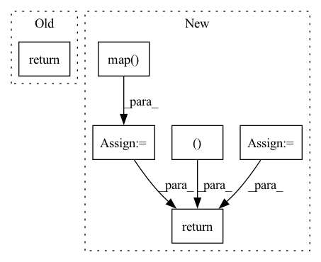

Pattern ID :39799

Before Change
trans_loss_t, domain_acc_t = self._single_domain_forward(g_t, f_t, domain=0)
self.grl.step()
self.domain_discriminator_accuracy = 0.5 * (domain_acc_s + domain_acc_t)
return 0.5 * (trans_loss_s + trans_loss_t)
def _single_domain_forward(self, logits, features, domain=1):
Perform forward on a single domain.
After Change
f = torch.cat((f_s, f_t), dim=0)
g = torch.cat((g_s, g_t), dim=0)
g = F.softmax(g,dim=1).detach()
h = self.grl(self.map(f, g))
d = self.domain_discriminator(h)
d_label = torch.cat((
torch.ones((g_s.size(0), 1)).to(g_s.device),
torch.zeros((g_t.size(0), 1)).to(g_t.device),
))
weight = 1.0 + torch.exp(-entropy(g))
batch_size = f.size(0)
weight = weight / torch.sum(weight) * batch_size
self.domain_discriminator_accuracy = binary_accuracy(d, d_label)
return self.bce(d, d_label, weight.view_as(d))
class RandomizedMultiLinearMap(nn.Module):
In pattern: SUPERPATTERN
Frequency: 3
Non-data size: 6
Instances
Fragment ID: 113351424
Project Name: thuml/transfer-learning-library
Commit Name: 6dfc8e293ca2cbc4d116dc8ed0a6ef176dff0d06
Time: 2020-04-12
Author: 13126830206@163.com
File Name: dalib/adaptation/cdan.py
M Class Name: ConditionalDomainAdversarialLoss
N Class Name: ConditionalDomainAdversarialLoss
M Method Name: forward(5)
N Method Name: forward(5)
M Parent Class: nn.Module
N Parent Class: nn.Module
M File Name: dalib/adaptation/cdan.py
N File Name: dalib/adaptation/cdan.py
M Start Line: 86
M End Line: 90
N Start Line: 87
N End Line: 100
'>
Before Change
trans_loss_t, domain_acc_t = self._single_domain_forward(g_t, f_t, domain=0)
self.grl.step()
self.domain_discriminator_accuracy = 0.5 * (domain_acc_s + domain_acc_t)
return 0.5 * (trans_loss_s + trans_loss_t)
def _single_domain_forward(self, logits, features, domain=1):
Perform forward on a single domain.
After Change
f = torch.cat((f_s, f_t), dim=0)
g = torch.cat((g_s, g_t), dim=0)
g = F.softmax(g,dim=1).detach()
h = self.grl(self.map(f, g))
d = self.domain_discriminator(h)
d_label = torch.cat((
torch.ones((g_s.size(0), 1)).to(g_s.device),
torch.zeros((g_t.size(0), 1)).to(g_t.device),
))
weight = 1.0 + torch.exp(-entropy(g))
batch_size = f.size(0)
weight = weight / torch.sum(weight) * batch_size
self.domain_discriminator_accuracy = binary_accuracy(d, d_label)
return self.bce(d, d_label, weight.view_as(d))
class RandomizedMultiLinearMap(nn.Module):
'>
Fragment ID: 113351437
Project Name: thuml/transfer-learning-library
Commit Name: 8477111b23336e7dd2d349a4b35b969240ff5871
Time: 2020-04-12
Author: 13126830206@163.com
File Name: dalib/adaptation/cdan.py
M Class Name: ConditionalDomainAdversarialLoss
N Class Name: ConditionalDomainAdversarialLoss
M Method Name: forward(5)
N Method Name: forward(5)
M Parent Class: nn.Module
N Parent Class: nn.Module
M File Name: dalib/adaptation/cdan.py
N File Name: dalib/adaptation/cdan.py
M Start Line: 86
M End Line: 90
N Start Line: 87
N End Line: 100
'>
Before Change
dataset = dataset.shuffle(store.buffer_size).batch(
store.batch_size, drop_remainder=True
)
return total_token_count, dataset
@tf.autograph.experimental.do_not_convert
def _split_input_target(chunk: str) -> Tuple[str, str]:
After Change
if store.validation_split:
logging.info("Creating validation dataset")
validation_dataset = full_dataset.enumerate() \
.filter(is_validation) \
.map(recover)
logging.info("Creating training dataset")
train_dataset = full_dataset.enumerate() \
.filter(is_train) \
.map(recover)
return total_token_count, validation_dataset, train_dataset
else:
return total_token_count, None, full_dataset
'>
Fragment ID: 113351455
Project Name: gretelai/gretel-synthetics
Commit Name: b7d4cb60265333b560fdcf6468e29f9b24535e26
Time: 2021-04-30
Author: zredlined@users.noreply.github.com
File Name: src/gretel_synthetics/tensorflow/train.py
M Class Name: AnonimousClass
N Class Name: AnonimousClass
M Method Name: _create_dataset(4)
N Method Name: _create_dataset(4)
M Parent Class:
N Parent Class:
M File Name: src/gretel_synthetics/tensorflow/train.py
N File Name: src/gretel_synthetics/tensorflow/train.py
M Start Line: 257
M End Line: 270
N Start Line: 274
N End Line: 310